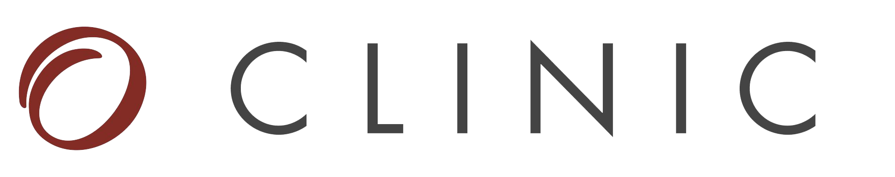

DermapenTM 4
Odmładzanie przez nakłuwanie
- Na czym polega zabieg?
- Efekty zabiegu
- Przebieg zabiegu
- Wskazania i przeciwskazania do zabiegu
- Zalecenia pozabiegowe
- Jak często powtarzać zabieg?
1. Na czym polega zabieg?
DERMAPEN 4 - pierwsze na świecie w pełni cyfrowe urządzenie do frakcyjnego mikronakłuwania skóry w najdoskonalszym wydaniu, służące do regeneracji skóry poprzez stymulowanie jej do samoodnowy.
DERMAPEN 4.0® - jedyna oryginalna technologia. NOWOŚĆ!
Teraz w najnowszym 4 wydaniu w 
- Jeszcze większy komfort dla pacjenta
- Efekty potwierdzone klinicznie i europejskim medycznym certyfikatem
- Cyfrowa kontrola precyzji zabiegu
- Nowe opatentowane jednorazowe głowice
- Nowa opatentowana cyfrowa kontrola większych prędkości nakłuwania
Nowy Dermapen 4® to najbardziej zaawansowane technologicznie urządzenie do frakcyjnego mikro nakłuwania, gdzie nowa technologia pulsujących igieł połączonej z wprowadzeniem substancji aktywnych jest nieporównywalna do tradycyjnych metod stosowanych w zabiegach mezoterapii . Zastosowane igły są dobierane odpowiednio do grubości skóry, dlatego użycie Dermapenu 4 jest wszechstronne, a zabiegi można stosować na skórę głowy, twarzy, szyi i dekoltu, jednocześnie redukując ból i dyskomfort. Mikronakłucia powodują, że poprawia się unaczynienie skóry a jej struktura ulega wzmocnieniu dzięki obecności nowego kolagenu.
Dzięki DERMAPEN 4 możliwe jest bardzo skuteczne dostarczanie substancji czynnych do naskórka i skóry właściwej. Powstałe w skórze mikrourazy stymulują fibroblasty oraz jej naturalną zdolność do naprawy, co skutkuje zainicjowaniem wzmożonej produkcji kolagenu, elastyny i kwasu hialuronowego. Te trzy kluczowe składniki mają wpływ na dobrą kondycję skóry – jej gęstość, elastyczność i odżywienie.
Ponad milion precyzyjnych nakłuć w 10 minut!!!
W urządzeniu DERMAPEN™ 4 zastosowano opatentowaną technologię AOVN™ (Advanced Oscillating Vertical Needling – Zaawansowane pionowe pulsacyjne nakłuwanie), która opiera się na takim doborze parametrów nakłuwania skóry, który generuje ich odpowiednią ilość – aż 1920 nakłuć na sekundę! Jest to wynik nieosiągalny dla żadnego innego urządzenia! To przekłada się na zwiększenie bezpieczeństwa i efektywności terapii oraz minimalizuje odczucia bólowe i dyskomfort pacjentów.
Wymienne, jednorazowe kartridże wyposażone są w 16 molibdenowych igieł. Igły te są niezwykle cienkie i wytrzymałe, co znacznie poprawia komfort pacjenta podczas zabiegu, minimalizując odczucia bólowe, poza tym nie zawierają chromu i niklu, dzięki czemu zabieg można wykonać również u osób uczulonych na te metale. Molibden uznawany jest za najbardziej zaawansowany materiał służący do produkcji narzędzi chirurgicznych.
Precyzyjnie dobrana głębokość iniekcji w zakresie od 0.2mm do 3,0mm, pozwala na pełną kontrolę wykonywanego zabiegu – inaczej niż w przypadku derma-rollerów i mezoterapii wykonywanej przy użyciu strzykawki i igły.
Efekty zabiegu
Dzięki systemowi pulsujących igieł i wytworzeniu mikronakłuć zachodzi ułatwione przenikanie substancji czynnych do naskórka i skóry właściwej oraz pobudzenie fibroblastów do tworzenia kolagenu. Zabieg DERMAPEN™ 4 pozwala na wyodrębnienie trzech faz mechanizmu jego działania w procesie pobudzania komórek skóry i odbudowy jej struktury.
Poprawa jakości skóry
Metoda mikronakłuwania frakcyjnego, poprzez stymulacje produkcji kolagenu oraz elastyny i uruchamianiu procesów naprawczych poprawia napięcie, gęstość i elastyczność skóry oraz jej ukrwienie, odżywienie i wygładzenie drobnych zmarszczek.
Ujednolicenie kolorytu skóry
Dzięki zdolności do regulacji procesów melanogenezy uzyskujemy ujednolicenie koloru i struktury skóry. Terapia DERMAPEN 4TM pozwala na redukcję przebarwień i wyrównanie kolorytu skóry.
Głębokie przenikanie substancji aktywnych
Mikronakłuwanie frakcyjne skóry pozwala również na wprowadzenie substancji czynnych w głąb skóry, dzięki czemu zabieg jest jeszcze bardziej skuteczny. W tym celu stosuje się indywidualnie dobrane do rodzaju skóry i problemu substancje czynne.
Tuż po zabiegu skóra może być lekko zaczerwieniona, ale nie dochodzi do powstawania siniaków ani krwiaków (czasami widoczne są jedynie małe punkty krwawienia). Po 3-4 dniach może pojawić się delikatne złuszczanie naskórka. Po 5-7 dniach od zabiegu skóra zyskuje „nowy wygląd” – pogłębiony i utrwalony serią zabiegów. Możesz liczyć na:
- nawilżenie i odżywienie skóry
- zmniejszenie widoczności porów
- redukcję zmarszczek
- redukcję pigmentacji oraz rozszerzonych naczynek
- redukcję cellulitu
- redukcję rozstępów
- redukcję przebarwień
- redukcję blizn (także potrądzikowych) i zmiękczenie zgrubień
- naturalne podniesienie powiek, kącików ust i policzków
Dodatkowo DERMAPENTM 4 znajduje zastosowanie w terapii łysienia jako leczenie wspomagające.
Przebieg zabiegu
Zabieg z zastosowaniem DERMAPENTM 4 trwa około 30-45 minut. Skórę przed zabiegiem dokładnie oczyszczamy, usuwamy martwe komórki naskórka, następnie dokładnie dezynfekujemy. Można też zastosować miejscowe znieczulenie choć zwykle jest ono zbędne. Urządzenie daje nam wyjątkową możliwość dobrania głębokości wkłuć, w zależności od okolicy, wskazania i grubości skóry. Możemy wykonać mikronakłuwanie w zakresie od 0,2mm do 3,0mm, zmieniając głębokość w trakcie zabiegu. W ten sposób, po naniesieniu na skórę odpowiedniego preparatu wykonujemy kilka pasaży celem jak najdokładniejszego mikroskłucia powierzchni skóry i dostarczeniu jej leku lub substancji aktywnej.
W trakcie zabiegu widoczne jest równomierne zaczerwienienie skóry, z możliwością punktowego krwawienia. Mimo głebokiego nakłuwania, nie dochodzi do powstania krwiaków i siniaków.. Bezpośrednio po zabiegu skóra będzie równomiernie zaczerwieniona oraz będzie odczuwalne ciepło i lekkie pieczenie, dlatego zostanie u Ciebie zastosowany krem łagodzący zmniejszający rumień i obrzęk. Możesz również zastosować specjalny podkład medyczny z pigmentami mineralnymi aby ukryć ślady zabiegu. Po 3-4 dniach może pojawić się delikatne złuszczanie. Po 5-7 dniach możesz już cieszyć się pierwszymi efektami terapii DERMAPEN™ 4.
Zalety DERMAPEN 4TM
- krótki czas zabiegu
- automatyczna kontrola głębokości iniekcji - podczas jednego zabiegu możliwość nakłuwania na różnych głębokościach
- mniejszy ból i większy komfort zabiegu dla pacjenta
- największa szybkość działania (1920 nakłuć na sekundę)
- molibdenowe igły - bardzo cienkie i nie wywołujące reakcji alergicznych
- krótszy czas rekonwalescencji
- sterylność zabiegu
Wskazania i przeciwskazania do zabiegu
Wskazania do zabiegu
- fotostarzenie skóry
- skóra skłonna do trądziku
- blizny potrądzikowe
- przebarwienia, plamy posłoneczne i pozapalne
- rozstępy
- łysienie, jako terapia wspomagająca
- zwiotczała, matowa, przesuszona, zanieczyszczona i poszarzała skóra
Przeciwskazania do zabiegu
- ciąża i okres karmienia piersią
- choroby nowotworowe
- stany zapalne skóry
- aktywny trądzik
Zalecenia pozabiegowe
Zabieg nie wymaga okresu rekonwalescencji. Możesz praktycznie bezpośrenio po nim wrócić do codziennej aktywności. Zabieg można zaliczyć do terapii bankietowych.
Bezpośrednio po zabiegu skóra będzie równomiernie zaczerwieniona, mogą też pojawić się drobne punkty krwawienia. Dlatego zostanie u Ciebie zastosowany krem łagodzący zmniejszający rumień i obrzęk. Możesz zastosować również specjalny podkład medyczny z pigmentami mineralnymi aby ukryć ślady zabiegu.
Po 8 godzinach od zabiegu umyj skórę delikatnym środkiem myjącym. Może to być płyn micelarny lub produkt do mycia skóry wrażliwej.
Stosuj wysoką ochronę przeciwsłoneczną przez co najmniej 2 tygodnie po zabiegu.
Częstotliwość zabiegu
Już pojedynczy zabieg przynosi widoczne efekty, ale najlepsze i trwałe rezultaty daje systematyczne powtarzanie w ustalonych schematach
Rekomendujemy 4-6 zabiegów w odstępach 3-6 tygodniowych, w zależności od rodzaju Twojej skóry i problemu z którym się zgłaszasz.
Indywidualny program terapii z zastosowaniem DERMAPEN™ 4 zostanie dobrany dla Ciebie indywidualnie przez ekspertów .